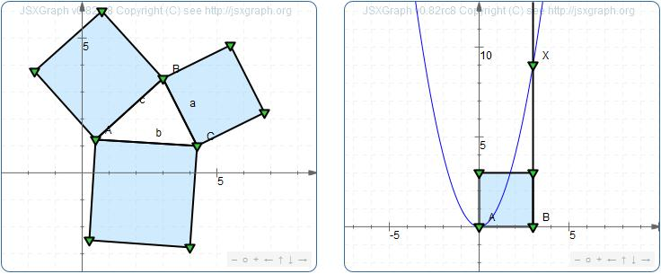

Abstract
JSXGraph is an open-source web library based on JavaScript for displaying interactive mathematics and drawings in a web browser. This article demonstrates the latest developments of JSXGraph focusing on fast data plotting, interactive charting, the ArcView shape format, the easy construction syntax JessieScript and shows the advantages of JSXGraph concerning mobile multitouch devices.
Table of Contents
JSXGraph is a JavaScript library for displaying dynamic, graphical content, especially mathematics, in a web browser. It is an open source project hosted by sourceforge and is released under the Lesser GNU General Public License (LGPL). Its feature set covers dynamic geometry, function graphs, curves, charts, and turtle graphics. Usually, JSXGraph is embedded in web pages for on- or offline use. It does not rely on any other library like Prototype or jQuery so that the complete download size is only about 80 kByte.
Web pages with JSXGraph constructions can be viewed with all major web browsers on nearly
every hardware platform and operating system. The range of supported hardware thus reaches from Desktop PCs down to tablet
computers and smartphones.
All the main web browser are supported: Firefox 3+, Internet Explorer 6+ (including the
upcoming version 9), Google Chrome (all versions) and also Safari and Opera since at least 2008. Therefore
JSXGraph uses SVG and VML for displaying the graphical content. Since the release of version 0.82rc8
JSXGraph can be diplayed even on Android devices which do not support SVG and VML. Here the HTML canvas element
is used for drawing and although the canvas element does not provide a DOM structure as SVG and VML it is
possible to highlight elements and drag them around interactively taking advantage of the internal hit testing of JSXGraph.
Originally, the concept of JSXGraph was to enable easy access to interactive geometric constructions and calculus for teachers and pupils without any plugins like Java or Flash. As JSXGraph is completely written in JavaScript there is no need of installing any plugin in school labs which might cause huge problems and it is even possible to show mathematics on mobile devices.
Therefore, the first aim for JSXGraph was to be able to read foreign data files from other dynamic geometry systems (DGS) like GEONExT, Geogebra, Cinderella, Cabri or Geometer's Sketchpad and display them in a webpage. By now, it is possible to read nearly all GEONExT files which was an important step on the way to a successor of GEONExT based on JSXGraph. Besides, huge parts of Geogebra features could be implemented. For Cinderella files, it is possible to read basic geometric content with its graphical properties. Furthermore, the European Intergeo project provides a common file format for all the dynamic geometry systems. This format can be displayed by JSXGraph so that it is conceivable to use any DGS for constructing and JSXGraph for displaying mathematical content.
As JSXGraph is completely implemented in JavaScript it is of course possible to produce more or less complexinteractive constructions within a few lines of JavaScript. Unfortunately this poses a hurdle to unexperienced users like teachers or pupils so that it is difficult for them to employ JSXGraph in the learning process.
An idea to solve this problem was the integration of JessieScript. This scripting language is adapted to what is taught at schools how to describe geometric constructions. For example is A(1,2) the JessieScript command to produce a point at the coordinates (1,2) while [AB] creates a segment between the points A and B. Here, the direction of the square brackets implies whether the line stops at the defining points or is drawn to the borders of the board. The whole syntax is described on the JSXGraph homepage.
Thus, this syntax is very short and easy to learn and understand. Different commands can be seperated by semicolons so that it is possible to provide complex constructions within one single line. JSXGraph takes the JessieScript syntax, parses it and displays the construction.
This involves a big advantage of JessieScript. It is entirely conceivable to integrate this syntax within a wiki in order to enable any user to produce geometric constructions without having to permit the use of JavaScript to everyone which might be a huge security risk.
Therefore, JessieScript can do more than just producing simple geometric constructions. It is possible to draw graphs with well-known mathematical syntax, like for example f:sin(x)+x^2, and one can modify any optical properties of an element that are integrated in JSXGraph. Even more advanced features like macros are integrated within JessieScript.
The following JessieScript commands provide a macro that constructes a square based on two adjacent vertices D and E.
Square = Macro(D,E) {
k1=k(E,D) nolabel draft; x=[DE] nolabel draft; v=|_(x,E) draft;
X=k1&v nolabel; z=||(x,X_1) draft; z2=|_(x,D) draft; Y=z2&z nolabel;
P[X_1,Y,D,E] nolabel;
}
This definition can be reused later to produce multiple squares as displayed in figure 1. On the left side the square macro is
applied three times to display the Theorem of Pythagoras, on the right side it is applied once to illustrate the square of a number.

Figure 1. JessieScript macros
JSXGraph can not only be used for geometric purposes but also for illustrating calculus. It provides the opportunities to draw graphs, their deravatives and integrals. These static graphs can also be constructed interactively, for example the amplitude of a sine wave might be dependent of a draggable point on the board. Therefore the graph has to be adjusted immediately while the point is dragged. As a graph or a curve can have any complexity this may cause speed problems having to recalculate the defining points of the underlying polyline and redrawing many times.
JSXGraph adresses this problem by customizing the precision of the drawing. While dragging a defining point, the curve is plotted with a lower complexity so that less calculations are needed while the structure of the curve is still visible. On the release of the mouse button the curve is calculated again with highest complexity. This advancement saves a lot of computing time and solves any speed issue about drawing interactive complex graphs.
paragraph: TODO